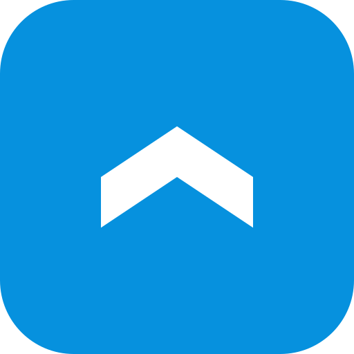

KyberTurva
Home
Uutiset
koulutukset
Uutiset
Täältä löytyy ajankohtaisia uutisia liittyen Suomen ja maailman kyberturvaan.
Kyberturvallisuuskeskus - Päivittäinen Uutiskooste
Kyberturvallisuuskeskus - Kaikki Ajankohtaista
Kyberturvallisuuskeskus - Tietoturva Nyt
Hacker News
